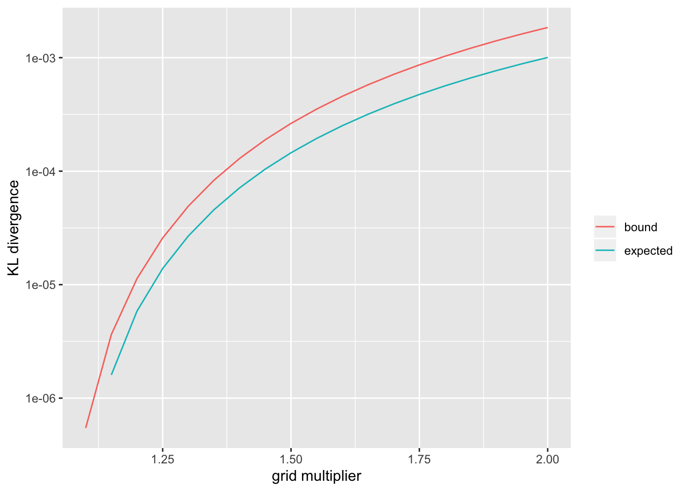
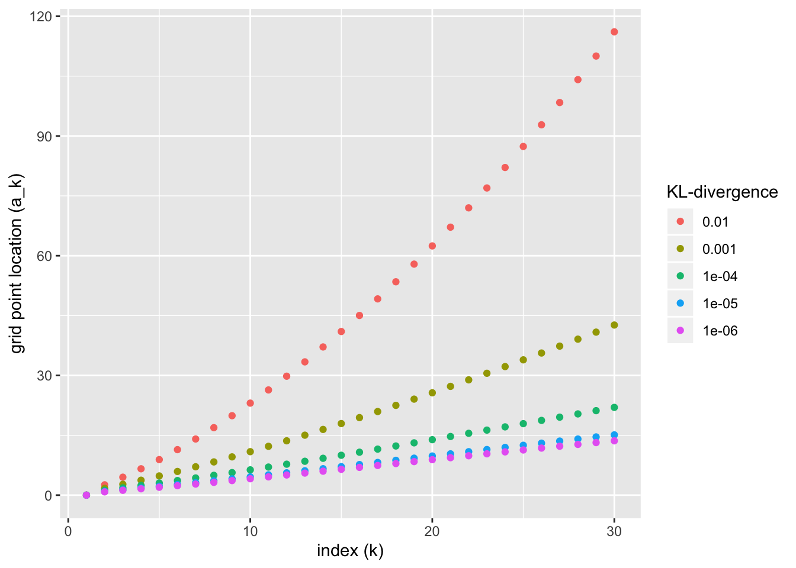
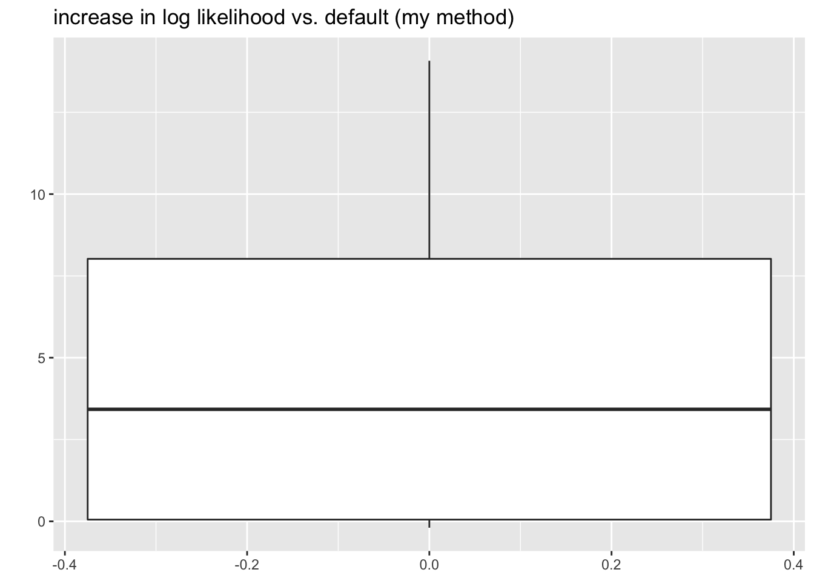

Last updated: 2020-11-08
Checks: 6 0
Knit directory: FLASHvestigations/
This reproducible R Markdown analysis was created with workflowr (version 1.2.0). The Report tab describes the reproducibility checks that were applied when the results were created. The Past versions tab lists the development history.
Great! Since the R Markdown file has been committed to the Git repository, you know the exact version of the code that produced these results.
Great job! The global environment was empty. Objects defined in the global environment can affect the analysis in your R Markdown file in unknown ways. For reproduciblity it’s best to always run the code in an empty environment.
The command set.seed(20180714) was run prior to running the code in the R Markdown file. Setting a seed ensures that any results that rely on randomness, e.g. subsampling or permutations, are reproducible.
Great job! Recording the operating system, R version, and package versions is critical for reproducibility.
Nice! There were no cached chunks for this analysis, so you can be confident that you successfully produced the results during this run.
Great! You are using Git for version control. Tracking code development and connecting the code version to the results is critical for reproducibility. The version displayed above was the version of the Git repository at the time these results were generated.
Note that you need to be careful to ensure that all relevant files for the analysis have been committed to Git prior to generating the results (you can use wflow_publish or wflow_git_commit). workflowr only checks the R Markdown file, but you know if there are other scripts or data files that it depends on. Below is the status of the Git repository when the results were generated:
Ignored files:
Ignored: .DS_Store
Ignored: .Rhistory
Ignored: .Rproj.user/
Ignored: analysis/.DS_Store
Ignored: code/.DS_Store
Ignored: code/flashier_bench/.DS_Store
Ignored: data/.DS_Store
Ignored: data/flashier_bench/
Ignored: data/metabo3_gwas_mats.RDS
Ignored: output/jean/
Untracked files:
Untracked: analysis/ashr_grid_refinement.Rmd
Untracked: analysis/batting_order.Rmd
Untracked: ashr_grid.R
Untracked: code/fasfunction.R
Untracked: code/nnmf.R
Untracked: code/wals.R
Untracked: data/BR_teams_2019.csv
Untracked: data/FG_teams_2019.csv
Untracked: data/batting_order.rds
Untracked: data/cole.rds
Untracked: data/odorizzi.rds
Untracked: data/oll_budget.txt
Untracked: data/oll_standings.tsv
Untracked: data/pitcher.rds
Untracked: data/pitcher2.rds
Untracked: data/pitcher_all.rds
Untracked: mlb2.R
Untracked: mlb_standings.txt
Untracked: ottoneu.R
Untracked: output/ashr_grid/
Untracked: phoible.R
Unstaged changes:
Modified: analysis/ebnm_npmle3.Rmd
Modified: analysis/index.Rmd
Note that any generated files, e.g. HTML, png, CSS, etc., are not included in this status report because it is ok for generated content to have uncommitted changes.
These are the previous versions of the R Markdown and HTML files. If you’ve configured a remote Git repository (see ?wflow_git_remote), click on the hyperlinks in the table below to view them.
| File | Version | Author | Date | Message |
|---|---|---|---|---|
| Rmd | 5893340 | Jason Willwerscheid | 2020-11-08 | wflow_publish(“analysis/ashr_grid.Rmd”) |
| html | 899a5b2 | Jason Willwerscheid | 2020-11-07 | Build site. |
| Rmd | bb9467a | Jason Willwerscheid | 2020-11-07 | wflow_publish(“analysis/ashr_grid.Rmd”) |
I want to think about how to set the ashr grid to ensure that we get a good approximation to the exact MLE.
Let \(\mathcal{G}\) be the family of all scale mixtures of normals and let \(\hat{g} \in \mathcal{G}\) be the MLE solution to the EBNM problem. In ashr, we approximate \(\mathcal{G}\) by the family of finite mixtures of normals \[ \pi_1 \mathcal{N}(0, \sigma_1^2) + \ldots + \pi_K \mathcal{N}(0, \sigma_K^2), \] where the grid \(\{ \sigma_1^2, \ldots, \sigma_K^2 \}\) is fixed in advance. Let \(\tilde{\mathcal{G}}\) be this restricted family and let \(\hat{\tilde{g}} \in \tilde{\mathcal{G}}\) be the restricted MLE solution (as given by ashr).
The quality of the grid can be measured by the per-observation difference in log likelihood \[ \frac{1}{n} \sum_{i = 1}^n \left( \log p(x_i \mid s_i, \hat{g}) - \log p(x_i \mid s_i, \hat{\tilde{g}}) \right) \]
Assume that all standard errors \(s_i\) are identical to \(s\). Then the likelihood \(p(x_i \mid s_i, \hat{g})\) is \[ h(x_i) := \int \mathcal{N}(x_i; 0, \tau^2 + s^2) df(\tau), \] where \(f\) is the mixing density of \(\hat{g}\), and \(p(x_i \mid s_i, \hat{\tilde{g}})\) is \[ \tilde{h}(x_i) := \pi_1 \mathcal{N}(x_i; 0, \sigma_1^2 + s^2) + \ldots + \pi_K \mathcal{N}(x_i; 0, \sigma_K^2 + s^2) \]
Next, assume that the population distribution of the \(x_i\)s is truly \(h\), so that the expected value of the per-observation difference in log likelihood is the KL-divergence between \(h\) and \(\tilde{h}\) \[ \text{KL}(h \mid\mid \tilde{h}) = \mathbb{E}_h \log \frac{h(x)}{\tilde{h}(x)} \]
Finally, to simplify analysis, assume that \(h\) is a finite mixture of normals \[ h(x_i) = \rho_1 \mathcal{N}(x_i; 0, \tau_1^2 + s^2) + \ldots + \rho_L \mathcal{N}(x_i; 0, \tau_L^2 + s^2) \] (Note, however, that \(\hat{g}\) can be approximated arbitrary well by a finite mixture!)
Now, for each \(1 \le \ell \le L\), let \(\sigma_{k(\ell)}^2\) be the largest \(\sigma_k^2\) such that \(\sigma_k^2 \le \tau_\ell^2\), so that \(\sigma_{k(\ell) + 1}^2\) is the smallest \(\sigma_k^2\) such that \(\tau_\ell^2 < \sigma_k^2\). In other words, if \(\sigma_1^2, \ldots, \sigma_K^2\) divides the positive real line into segments, then \(\tau_\ell^2\) is on the segment \(\left[\sigma_{k(\ell)}^2, \sigma_{k(\ell) + 1}^2\right)\). (I assume that \(\sigma_1^2\) has been chosen sufficiently small and \(\sigma_K^2\) sufficiently large.) Now approximate each mixture component of \(h\) by a mixture of two normals: \[ \tilde{\tilde{h}} := \rho_1 \left( \omega_1 \mathcal{N}(0, \sigma_{k(1)}^2 + s^2) + (1 - \omega_1) \mathcal{N}(0, \sigma_{k(1) + 1}^2 + s^2) \right) + \ldots + \rho_L \left( \omega_L \mathcal{N}(0, \sigma_{k(L)}^2 + s^2) + (1 - \omega_L) \mathcal{N}(0, \sigma_{k(L) + 1}^2 + s^2) \right), \] where \(\omega_1, \ldots, \omega_L\) remains to be determined.
Since \(\tilde{\tilde{h}}\) is on the ashr grid and \(\tilde{h}\) is the maximum likelihood estimate on the ashr grid, it must be true that \[ \text{KL}(h \mid\mid \tilde{h}) \le \text{KL}(h \mid\mid \tilde{\tilde{h}}) \] for any choice of \(\omega_1, \ldots, \omega_L\). Further (see section 6 here), \[ \begin{aligned}
\text{KL}(h \mid\mid \tilde{\tilde{h}})
&\le
\sum_\ell \rho_\ell \left( \text{KL} \left(\mathcal{N}(0, \tau_\ell^2 + s^2) \mid\mid \omega_\ell \mathcal{N}(0, \sigma_{k(\ell)}^2 + s^2) + (1 - \omega_\ell) \mathcal{N}(0, \sigma_{k(\ell) + 1}^2 + s^2) \right) \right) \\
&\le
\max_\ell \text{KL}\left(\mathcal{N}(0, \tau_\ell^2 + s^2) \mid\mid \omega_\ell \mathcal{N}(0, \sigma_{k(\ell)}^2 + s^2) + (1 - \omega_\ell) \mathcal{N}(0, \sigma_{k(\ell) + 1}^2 + s^2) \right)\\
&\le
\max_{k,\ \sigma_k \le \tau \le \sigma_{k + 1}} \text{KL}\left(\mathcal{N}(0, \tau^2 + s^2) \mid\mid \omega \mathcal{N}(0, \sigma_k^2 + s^2) + (1 - \omega) \mathcal{N}(0, \sigma_{k + 1}^2 + s^2) \right)
\end{aligned} \] Next, since KL-divergence is invariant to scaling, if we set the grid so that the ratio \[ m_k := \frac{\sigma_{k + 1}^2 + s^2}{\sigma_k^2 + s^2} \] is identical to \(m\) for all \(1 \le k \le K - 1\), then we can conclude that \[ \text{KL}(h \mid\mid \tilde{h}) \le \max_{1 \le a \le m} \text{KL} (\mathcal{N}(0, a) \mid\mid \omega \mathcal{N}(0, 1) + (1 - \omega) \mathcal{N}(0, m))\] Since this is true for all \(0 \le \omega \le 1\), we can get an upper bound for the per-observation difference in log likelihood (given the assumptions listed above) by solving the minimax problem \[ \text{KL}(h \mid\mid \tilde{h}) \le \max_{1 \le a \le m} \min_\omega \text{KL} (\mathcal{N}(0, a) \mid\mid \omega \mathcal{N}(0, 1) + (1 - \omega) \mathcal{N}(0, m)) \] I use importance sampling to approximate the KL-divergence. The current ashr default \(m = \sqrt{2}\) gives an upper bound of
log_add <- function(x, y) {
C <- pmax(x, y)
x <- x - C
y <- y - C
return(log(exp(x) + exp(y)) + C)
}
# To "sample" from different a, sample once and then scale depending on a. This method ensures a
# smooth optimization objective.
smn_KLdiv <- function(a, omega, m, samp) {
samp <- samp * sqrt(a)
h_llik <- mean(dnorm(samp, sd = sqrt(a), log = TRUE))
llik1 <- log(omega) + dnorm(samp, sd = 1, log = TRUE)
llik2 <- log(1 - omega) + dnorm(samp, sd = sqrt(m), log = TRUE)
htilde_llik <- mean(log_add(llik1, llik2))
return(h_llik - htilde_llik)
}
min_smnKLdiv <- function(a, m, samp) {
optres <- optimize(function(omega) smn_KLdiv(a, omega, m, samp), interval = c(0, 1), maximum = FALSE)
return(optres$objective)
}
ub_smnKLdiv <- function(m, samp) {
optres <- optimize(function(a) min_smnKLdiv(a, m, samp), interval = c(1, m), maximum = TRUE)
return(optres$objective)
}
set.seed(666)
sampsize <- 1000000
samp <- rnorm(sampsize)
default_ub <- ub_smnKLdiv(sqrt(2), samp)
default_ub#> [1] 0.0001525892Thus, using the default settings, ashr will give an approximation that’s within one log likelihood unit of the exact solution for problems as large as \(n = 6000\) or so. (Note, however, that ashr spaces the \(\sigma_k^2\)s equally rather than \(\sigma_k^2 + s^2\), as would be more efficient: \(\{0, (m - 1)s^2, (m^2 - 1)s^2, (m^3 - 1)s^2, \ldots\}\).)
To get a sense of how tight the upper bound is, we can sample \(a \sim \text{Unif}\left[1, m\right]\) to get an “expected” KL-divergence.
m <- sqrt(2)
set.seed(666)
a <- runif(1000, min = 1, max = m)
# Use a smaller sample here.
sampsize <- 50000
samp <- rnorm(sampsize)
default_ev <- mean(sapply(a, function(a) min_smnKLdiv(a, m, samp)))
default_ev#> [1] 3.857677e-05So the above upper bound should be pretty close to the actual KL-divergence.
For larger problems or to obtain better approximations, a denser grid can be used. I show upper bounds and expected values for a range of \(m\) (the code was run in advance):
smn_res <- readRDS("./output/ashr_grid/smn_res.rds")
smn_res <- as_tibble(smn_res)
df <- gather(smn_res, "metric", "KLdiv", -m) %>%
filter(KLdiv > 0) %>%
mutate(metric = ifelse(metric == "ub", "bound", "expected"))
ggplot(df, aes(x = m, y = KLdiv, color = metric)) +
geom_line() +
scale_y_log10() +
labs(x = "grid multiplier", y = "KL divergence", color = "")
| Version | Author | Date |
|---|---|---|
| 899a5b2 | Jason Willwerscheid | 2020-11-07 |
Now let \(\mathcal{G}\) be the family of symmetric priors that are unimodal at zero. ashr approximates \(\mathcal{G}\) by the family of finite mixtures of uniforms \[ \pi_1 \text{Unif}\left[-a_1, a_1\right] + \ldots + \pi_K \text{Unif}\left[-a_K, a_K\right], \] where the grid \(\{ a_1, \ldots, a_K \}\) is fixed in advance.
Let all notation be similar to the above, and let \[\text{UN}(a, s^2)\] denote the convolution of a uniform distribution on \(\left[-a, a\right]\) with \(\mathcal{N}(0, s^2)\) noise. Then, by an identical argument to the above, \[ \text{KL}(h \mid\mid \tilde{h}) \le \max_{k,\ a_k \le a \le a_{k + 1}} \min_\omega \text{KL}\left(\text{UN}(a, s^2) \mid\mid \omega \text{UN}(a_k, s^2) + (1 - \omega) \text{UN}(a_{k + 1}, s^2) \right) \]
Unlike for scale mixtures of normals, however, a scaling argument can’t reduce this to a single minimax problem, and it’s not immediately clear how the grid should be spaced. To get an idea of what an optimal grid should look like, I set \(s = 1\), choose a target KL-divergence, and then iteratively construct the grid:
log_minus <- function(x, y) {
C <- pmax(x, y)
x <- x - C
y <- y - C
return(log(exp(x) - exp(y)) + C)
}
llik_UN <- function(a, samp) {
llik1 <- pnorm(a, mean = samp, log.p = TRUE)
llik2 <- pnorm(-a, mean = samp, log.p = TRUE)
return(log_minus(llik1, llik2) - log(2 * a))
}
UN_KLdiv <- function(a, omega, aleft, aright, unif_samp, norm_samp) {
samp <- a * unif_samp + norm_samp
h_llik <- mean(llik_UN(a, samp))
llik1 <- log(omega) + llik_UN(aleft, samp)
llik2 <- log(1 - omega) + llik_UN(aright, samp)
htilde_llik <- mean(log_add(llik1, llik2))
return(h_llik - htilde_llik)
}
min_symmKLdiv <- function(a, aleft, aright, unif_samp, norm_samp) {
optres <- optimize(function(omega) UN_KLdiv(a, omega, aleft, aright, unif_samp, norm_samp),
interval = c(0, 1), maximum = FALSE)
return(optres$objective)
}
ub_symmKLdiv <- function(aleft, aright, unif_samp, norm_samp) {
optres <- optimize(function(a) min_symmKLdiv(a, aleft, aright, unif_samp, norm_samp),
interval = c(aleft, aright), maximum = TRUE)
return(optres$objective)
}
find_next_gridpt <- function(aleft, targetKL, unif_samp, norm_samp, max_space) {
uniroot_fn <- function(aright) {ub_symmKLdiv(aleft, aright, unif_samp, norm_samp) - targetKL}
optres <- uniroot(uniroot_fn, c(aleft + 1e-6, aleft + max_space))
return(optres$root)
}
build_grid <- function(targetKL, unif_samp, norm_samp, len = 30L) {
i <- 1
startpt <- 1e-6
cat("Gridpoint", i, ":", startpt, "\n")
i <- 2
nextpt <- find_next_gridpt(startpt, targetKL, unif_samp, norm_samp, max_space = 10)
grid <- c(startpt, nextpt)
cat("Gridpoint", i, ":", max(grid), "\n")
last_ratio <- 2 * nextpt
for (i in 3:len) {
nextpt <- find_next_gridpt(max(grid), targetKL, unif_samp, norm_samp, max(grid) * last_ratio)
last_ratio <- nextpt / max(grid)
grid <- c(grid, nextpt)
cat("Gridpoint", i, ":", max(grid), "\n")
}
return(grid)
}
# The sample size again needs to be relatively small.
sampsize <- 50000
unif_samp <- runif(sampsize, min = -1, max = 1)
norm_samp <- rnorm(sampsize)
grid <- build_grid(targetKL = default_ub, unif_samp, norm_samp, len = 3L)#> Gridpoint 1 : 1e-06
#> Gridpoint 2 : 1.31824
#> Gridpoint 3 : 1.993085Since the problem is slow to solve, I’ve only added three grid points here as an illustration. In code run in advance, I’ve built ashr grids for various KL-divergence targets. They appear as follows:
symm_res <- readRDS("./output/ashr_grid/symm_ub_res.rds")
df <- symm_res %>%
mutate(KL = as.factor(KL)) %>%
mutate(KL = fct_relevel(KL, rev))
ggplot(df, aes(x = idx, y = grid, color = as.factor(KL))) +
geom_point() +
labs(x = "index (k)", y = "grid point location (a_k)", color = "KL-divergence")
| Version | Author | Date |
|---|---|---|
| 899a5b2 | Jason Willwerscheid | 2020-11-07 |
What happens as \(k \to \infty\)? Intuitively, as \(a\) becomes very large, we can ignore the additive noise and just look at the KL-divergence between uniforms: \[\begin{aligned} \text{KL}\left(\text{Unif}\left[-a, a\right] \mid\mid \omega \text{Unif}\left[-a_k, a_k \right] + (1 - \omega) \text{Unif}\left[-a_{k + 1}, a_{k + 1}\right] \right) &= -\frac{a_k}{a} \log \frac{\frac{\omega}{2a_k} + \frac{1 - \omega}{2a_{k + 1}}}{\frac{1}{2a}} - \frac{a - a_k}{a} \log \frac{\frac{1 - \omega}{2a_{k + 1}}}{\frac{1}{2a}} \\ &= -\frac{a_k}{a} \log \left(\frac{\omega a_{k + 1}}{(1 - \omega)a_k} + 1\right) - \log \frac{a(1 - \omega)}{a_{k + 1}} \end{aligned}\] This is minimized over \(0 \le \omega \le 1\) by setting \[ \omega = \frac{a_k(a_{k + 1} - a)}{a(a_{k + 1} - a_k)} \] so that \[ \begin{aligned} \min_\omega \text{KL}\left(\text{Unif}\left[-a, a\right] \mid\mid \omega \text{Unif}\left[-a_k, a_k \right] + (1 - \omega) \text{Unif}\left[-a_{k + 1}, a_{k + 1}\right] \right) &= \frac{a - a_k}{a} \log \frac{a_{k + 1} - a_k}{a - a_k} \\ &\approx \frac{a - a_k}{a_k} \log \frac{a_{k + 1} - a_k}{a - a_k} \end{aligned} \] The function \(x \log x\) is minimized at \(x = \frac{1}{e}\), so \[ \max_a \min_\omega \text{KL}\left(\text{Unif}\left[-a, a\right] \mid\mid \omega \text{Unif}\left[-a_k, a_k \right] + (1 - \omega) \text{Unif}\left[-a_{k + 1}, a_{k + 1}\right] \right) \approx \frac{a_{k + 1} - a_k}{ea_k} \] Given \(a_k\) and a desired target KL-divergence \(\kappa\), then, we should set \[ a_{k + 1} = (1 + \kappa e)a_k\] That is, the spacing between grid points grows exponentially as \(k \to \infty\), but for reasonable values of \(\kappa\) it grows so slowly that it will essentially look linear.
To check these calculations, I set \(a_k = 100000\) and \(\kappa = .001\). I calculate the optimal \(a_{k + 1}\) as above and I check it against the rough estimate given in the last display:
nextpt <- find_next_gridpt(aleft = 100000, targetKL = 1e-3, unif_samp, norm_samp, max_space = 500)
cat(" Optimal next grid point:", nextpt, "\n",
"Estimated rate of growth as k goes to infinity:", 1 + exp(1)*1e-3)#> Optimal next grid point: 100295.9
#> Estimated rate of growth as k goes to infinity: 1.002718So the above argument appears to be sound.
For scale mixtures of normals with \(s_i \equiv s\), we should use the grid \(\{0, (m - 1)s^2, (m^2 - 1)s^2, (m^3 - 1)s^2, \ldots\}\). When the standard errors \(s_i\) are not all the same, it’s probably best to set \(s = \min_i s_i\).
I wouldn’t expect half-normal mixtures to behave much differently from normal, so the same grid will likely work for mixcompdist = "halfnormal".
Similarly, any approach that works for symmetric unimodal priors should work for mixcompdist settings halfuniform, +uniform, and -uniform.
Finally, for symmetric unimodal priors, a linearly spaced grid is both simple to implement and not terribly far from the optimal grid. However, if there are very large observations, then the number of mixture components required will become prohibitive. I propose fixing the number of mixture components \(K\) and then combining the a linear grid with a quantile-based approach. Specifically, set grid1 to be the linear grid \(\{0, \delta, 2\delta, \ldots, (K - 1)\delta\}\). \(\delta\) should be chosen to match the target KL-divergence (for example, to get a similar bound to the default setting for scale mixtures of normals, set \(\delta = 0.7\)). If \(\max \vert x_i \vert > (K - 1)\delta\), then set grid2 to be quantile(abs(x), (1:K)/K). Let the final grid be pmax(grid1, grid2). For a particularly challenging example, take \[ \theta \sim 0.5 \delta_0 + 0.4 \text{Unif}[-5, 5] + 0.1 t_3 \] with standard errors \(s = 1\). In all cases, the method I’ve proposed finds a solution that is at least as good as the solution found using the default grid. I also include scale mixture of normals results for comparison.
nsim <- 20
nobs <- 10000
sim_res <- tibble()
for (i in 1:nsim) {
theta_comp <- sample(3, nobs, replace = TRUE, prob = c(0.5, 0.4, 0.1))
unif_samp <- runif(nobs, -5, 5)
t_samp <- rt(nobs, df = 3)
theta <- rep(0, nobs)
theta[theta_comp == 2] <- unif_samp[theta_comp == 2]
theta[theta_comp == 3] <- t_samp[theta_comp == 3]
x <- theta + rnorm(nobs)
smn_res <- ashr::ash(x, 1, "normal", prior = "uniform")
symm_res_def <- ashr::ash(x, 1, "uniform", prior = "uniform")
# Use the same number of mixture components as the default method uses.
K <- length(symm_res_def$fitted_g$pi)
grid1 <- 0.7 * 0:(K - 1)
grid2 <- c(0, quantile(abs(x), (1:(K - 1) / (K - 1))))
grid <- pmax(grid1, grid2)
symm_res_cust <- ashr::ash(x, 1, "uniform", prior = "uniform", pointmass = FALSE, mixsd = grid)
sim_res <- sim_res %>%
bind_rows(tibble(trial = i,
smn_llik = smn_res$loglik,
symm_def_llik = symm_res_def$loglik,
symm_cust_llik = symm_res_cust$loglik))
}
sim_res <- sim_res %>%
mutate(symm_cust_diff = symm_cust_llik - symm_def_llik,
smn_diff = smn_llik - symm_cust_llik)
ggplot(sim_res, aes(y = symm_cust_diff)) +
geom_boxplot() +
labs(title = "increase in log likelihood vs. default (my method)", y = "")
ggplot(sim_res, aes(y = smn_diff)) +
geom_boxplot() +
labs(title = "increase in log likelihood vs. default (scale mix of normals)", y = "")
sessionInfo()#> R version 3.5.3 (2019-03-11)
#> Platform: x86_64-apple-darwin15.6.0 (64-bit)
#> Running under: macOS Mojave 10.14.6
#>
#> Matrix products: default
#> BLAS: /Library/Frameworks/R.framework/Versions/3.5/Resources/lib/libRblas.0.dylib
#> LAPACK: /Library/Frameworks/R.framework/Versions/3.5/Resources/lib/libRlapack.dylib
#>
#> locale:
#> [1] en_US.UTF-8/en_US.UTF-8/en_US.UTF-8/C/en_US.UTF-8/en_US.UTF-8
#>
#> attached base packages:
#> [1] stats graphics grDevices utils datasets methods base
#>
#> other attached packages:
#> [1] forcats_0.4.0 stringr_1.4.0 dplyr_0.8.0.1 purrr_0.3.2
#> [5] readr_1.3.1 tidyr_0.8.3 tibble_2.1.1 ggplot2_3.2.0
#> [9] tidyverse_1.2.1
#>
#> loaded via a namespace (and not attached):
#> [1] tidyselect_0.2.5 xfun_0.6 ashr_2.2-51
#> [4] haven_2.1.1 lattice_0.20-38 colorspace_1.4-1
#> [7] generics_0.0.2 htmltools_0.3.6 yaml_2.2.0
#> [10] rlang_0.4.2 mixsqp_0.3-40 pillar_1.3.1
#> [13] glue_1.3.1 withr_2.1.2 modelr_0.1.5
#> [16] readxl_1.3.1 munsell_0.5.0 gtable_0.3.0
#> [19] workflowr_1.2.0 cellranger_1.1.0 rvest_0.3.4
#> [22] evaluate_0.13 labeling_0.3 knitr_1.22
#> [25] invgamma_1.1 irlba_2.3.3 broom_0.5.1
#> [28] Rcpp_1.0.4.6 scales_1.0.0 backports_1.1.3
#> [31] jsonlite_1.6 truncnorm_1.0-8 fs_1.2.7
#> [34] hms_0.4.2 digest_0.6.18 stringi_1.4.3
#> [37] grid_3.5.3 rprojroot_1.3-2 cli_1.1.0
#> [40] tools_3.5.3 magrittr_1.5 lazyeval_0.2.2
#> [43] crayon_1.3.4 whisker_0.3-2 pkgconfig_2.0.2
#> [46] Matrix_1.2-15 SQUAREM_2017.10-1 xml2_1.2.0
#> [49] lubridate_1.7.4 assertthat_0.2.1 rmarkdown_1.12
#> [52] httr_1.4.0 rstudioapi_0.10 R6_2.4.0
#> [55] nlme_3.1-137 git2r_0.25.2 compiler_3.5.3